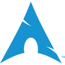
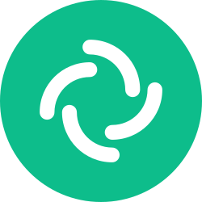
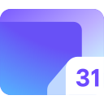
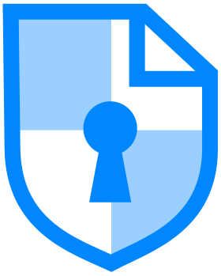

- Stay away from social media. When really necessary, just use a private messenger suggested below.
- If you can't remove it later, then don't put it online.
-
Avoid unauthorized access:
- Use a password manager
- Use encryption whenever possible.
- Don't leave your devices unattended.
- Don't plug in random stuff in your devices.
- Disable Bluetooth, WiFi, etc, when not required. Turn on Airplane mode as much as possible.
- Be very stingy with the permissions you grant to users or apps on your network or devices.
In General:
Remark: Kindly stop using an operating system that collects data like Windows 10/11 or the custom flavored skinned Android by your phone's manufacturer; you deserve something better. Choose an alternative here. But no matter which OS you choose beware that the desktop operating systems were not designed with security in mind, so try avoiding desktops as much as possible and sticking to an updated mobile device preferably running one of the OS recommended here.
Don't fall for flashing custom ROMs just for the sake of De-Googling your Android device as doing so would seriously ruin your Security and thus, your Privacy. Use the Recommended operating system here or stick to the stock ROM being updated regularly.
DO NOT USE A DEVICE IN ABSENCE OF REGULAR UPDATES
-
Operating system:
- 📱 Phone:
GrapheneOS is the best choice when it comes to privacy and security. GrapheneOS is a Privacy and Security-focused mobile OS with Android app compatibility developed as a non-profit open source project. It's focused on the research and development of privacy and security technology, including substantial improvements to sandboxing, exploit mitigations, and the permission model. It recently added support for sandboxed play services.
If you can't get a pixel then avoid using ROMs that require you to keep the bootloader unlocked and stick to your stock ROM.
A Linux distribution is an operating system made from a software collection that is based upon the Linux kernel and, often, a package management system. (Rolling releases are preferred over stable release distros).
-
Beginner/Migrating from Windows or MacOS:
Fedora is an operating system developed as a community project and sponsored by Red Hat (a subsidiary of IBM). It prefers flatpak as a dominant packaging style. It follows a semi-rolling release cycle. Each Fedora release is supported for one year, with a new version released every 6 months. It tends to be very up to date both in terms of applications and the Linux kernel itself. If you are worried that you many unintentionally break your system, then have a look at Fedora Silverblue (uses GNOME) or Fedora Kinoite (uses KDE). Both of which are immutable variants of Fedora with a strong focus on container workflows.
-
 Arch Linux
Arch Linux is an independently developed, x86-64 general purpose GNU/Linux distribution versatile enough to suit any role. Development focuses on simplicity, minimalism, and code elegance. Arch is installed as a minimal base system, configured by the user upon which their own ideal environment is assembled by installing only what is required or desired for their unique purposes. GUI configuration utilities are not officially provided, and most system configuration is performed from the shell by editing simple text files. Arch strives to stay bleeding edge, and typically offers the latest stable versions of most software.
Remark: If you are currently using an Instant Messenger like Telegram, LINE, Viber, WhatsApp, or plain SMS. Please pick an alternative here.
-
💬 Messenger:
- Requires phone number but easy to begin with:
![[signal logo]](./resources/signal.svg)
Signal is a mobile app developed by Signal Messenger LLC. Supported by a 501c3 nonprofit organization. The app provides instant messaging, as well as voice, and video calling. All communications are E2EE unless you choose to send as SMS. Its protocol is the gold standard for encryption and has also been independently audited. It now supports User Names for communications without exchanging phone numbers.
-
 Element
Element is the best client for the Matrix network. The Matrix open standard is an open-source audited standard for secure, decentralized, real-time communication. Most other services can be bridged to it, giving you a single place to get and send all your messages.
Remark: If you are currently using a privacy-hostile E-Mail provider like Gmail, Outlook, Yahoo, etc. Please pick an alternative here. Email is not a private and inherently insecure protocol, so try dropping it in favor of a secure messenger as suggested above. But in cases where you must have one, stick to the recommendations below.
-
📧 Email & Calendar Provider:
- Proton:
-
 Proton Calendar
Proton Calendar, an encrypted calendar service, is accessible to Proton users through web or mobile applications. The service offers automatic end-to-end encryption of all data, sharing capabilities, import/export options, and more. Free-tier users can manage three calendars, while paid subscribers have access to up to 25 calendars. Enhanced sharing features are exclusively available to paid subscribers.
![[protonmail logo]](./resources/protonmail.svg)
ProtonMail is an email service with a focus on privacy, encryption, security, and ease of use. They have been in operation since 2013. ProtonMail is based in Genève, Switzerland. Accounts start with 500 MB of storage with their free plan. They offer aliases too.
-
![[tutanota logo]](./resources/tutanota.svg) Tutanota Calendar
Tutanota Calendar
Tuta provides a complimentary encrypted calendar on their supported platforms. The calendar includes features such as automatic end-to-end encryption of all data, sharing options, import/export capabilities, multi-factor authentication, and more. Access to multiple calendars and advanced sharing features is restricted to users with paid subscriptions.
Remark: In the world of data breaches, a password manager and 2FA are your best defenses. But not all password managers are equal. Secure and trusted ones are listed here.
-
🔐 Password Manager/2FA:
- Offline:
KeePass is a free open source password manager. Passwords can be stored in an encrypted database on your device, which can be unlocked with one master key. Along with that, KeePass can also be used for 2FA, too.
Bitwarden is among the easiest and safest solutions to store all of your logins and passwords while conveniently keeping them synced between all of your devices. If you don't want to use the Bitwarden cloud, you can easily host your own Bitwarden server.
Remark: If you are currently using a Domain Name System (DNS) service provided by your ISP (and gracefully providing them with a list of every internet resource you access along with the timestamps and duration of your access) then switch to the provider recommended here. An additional benefit: Changing DNS may open websites that were previously blocked.
Its highly recommended that DNS be setup with the native method supported by your operating system rather than a third party application. If your setup requires blocking of ads, trackers, etc. then the recommendation is to use a local blocklist setup rather than using an ad blocking DNS. This way ads are blocked faster and your fingerprint is reduced too.
-
DNS Provider:
Quad9 is a free service that replaces your default ISP or enterprise Domain Name Server (DNS) configuration. They have a strict Zero-logging policy offering DNS over HTTPS (DoH) and DNS over TLS (DoT), with QNAME minimization. Quad9 is operated by the Quad9 Foundation, a Swiss public-benefit, not-for-profit foundation with the purpose of improving the privacy and cybersecurity of Internet users, headquartered in Zurich. It is the only global public resolver which is operated not-for-profit, in the public benefit. Quad9 is entirely subject to Swiss privacy law, and the Swiss government extends that protection of law to Quad9's users throughout the world, regardless of citizenship or country of residence. Quad9 is currently the only global recursive resolver which is not subject to United States law.
Remark: If you are currently not using or using a bad/fake VPN service, then its highly recommended that you switch to the trusted no-logs VPN providers recommended here. Although VPN is not a silver bullet, yet, you will have two main advantages:
The websites you visit wouldn't know your IP Address and your ISP wouldn't know the sites you visited. For even better privacy, consider using TOR.
-
💈 VPN Provider:
- Paid tier only:
-
IVPN is a VPN service offered by Privatus Limited based in Gibraltar. Privatus Limited has been independently audited by cure53 and has undergone a no-logging audit and a comprehensive pentest report. They Accept Bitcoin, Monero, and Cash as payment methods and all of their clients are open source as well.
Mullvad is a fast and inexpensive VPN with a serious focus on transparency and security. They have been in operation since 2009. Mullvad is based in Sweden and does not have a free trial. They accept Bitcoin, cash, bank wire, credit card, PayPal, and Swish.
Remark: Use TOR browser for most of your browsing and use Brave when doing something that inherently requires you to be identified like banking. A browser is your gateway to the internet. Make sure you don't have uninvited guests (trackers/ads) or your Jewelry (private data) hanging out the window. If you are currently using a rigged gateway like Google Chrome, Microsoft Edge, etc. it's highly recommended that you switch to the ones recommended here.
-
🌐 Browser:
- Prioritizing Privacy:
Tor Browser is the choice if you need anonymity. This browser provides you with access to the Tor Bridges and Tor Network, along with extensions that can be automatically configured to fit its three security levels - Standard, Safer and Safest (you change any setting other than these at your own peril).
Brave Browser has some of the best privacy defaults and includes a built-in content blocker. Brave is built upon the Chromium web browser project, so it should feel familiar and have minimal website compatibility issues.
Remark: Your notes should be your notes, don't have a public audience for your private stuff (Cough-Google Keep, Microsoft OneNote, Evernote). Switch to the recommended alternative here.
-
📝 Note Taking:
Joplin is a free, open-source, and fully-featured note-taking and to-do application which can handle a large number of markdown notes organized into notebooks and tags. It offers end-to-end encryption and can sync through Nextcloud, Dropbox, and more. It also offers easy import from Evernote and plain-text notes.
Remark: If you are currently using an Office suite like Microsoft Office. Please pick an alternative here.
-
📔 Office Suite:
- Works Offline:
-
OnlyOffice
OnlyOffice is a free software office suite developed by Ascensio System SIA, a company headquartered in Riga, Latvia. It features online document editors, a platform for document management, corporate communication, mail, and project management tools. It is highly compatible with Microsoft Office. If you are looking for a complete replacement for say, Microsoft Office, then it's your best bet.
![[libreoffice logo]](./resources/libreoffice.svg)
LibreOffice is a free and open-source office productivity software suite, a project of The Document Foundation. It's the default Office suite installed on almost all Linux distros out of the box. It supports almost all document formats from Microsoft Office. It does everything that a complete office suite would.
-
 CryptPad
CryptPad provides an open-source, full-fledged office suite with all the tools necessary for productive collaboration. Applications include: Rich Text, Spreadsheets, Code/Markdown, Kanban, Slides, Whiteboard and Polls. The applications are complemented by a set of collaboration features such as chat, contacts, color by author (code/markdown), and comments with mentions (rich text). It can be self-hosted, but if you don't feel like it then CryptPad.fr is the official instance of the open-source CryptPad project. It is administered by XWiki-SAS, the employee-owned French company which created and maintains the product.
Remark: Share your files between your devices, with your friends and family, or anonymously online. Switch to the recommended service here.
Remark: For your own sake STOP USING GOOGLE. Their results are biased and of course they have no privacy. Switch to the recommended service here and search anonymously online.
-
🔍 Search Engine:
-
Search
Brave Search is an independently indexed search engine by Brave that is optimized against Google. Its recommended that you disable Anonymous usage metrics from settings as it is enabled by default. Brave states that no personally identifiable information is collected. Other metrics that are processed including your IP, are disposed off and not retained. It is the default search engine in Brave Browser. The company is based in the USA.
DuckDuckGo is the most popular private search engine and is the default for the Tor Browser. The company is based in the USA.
Remark: Try doing as much of your work offline as possible, but if you need a cloud provider then use the one recommended here.
-
💭 📦 🗘 File Storage/Cloud/Sync Services:
- With heavy dependence on Server:
-
Proton Drive
Proton Drive is an E2EE general file storage service by the popular encrypted email provider Proton Mail.
Nextcloud is a suite of free and open-source client-server software for creating your own file hosting services on a private server you control or using others who do. It also comes with end-to-end encryption (E2EE). They provide web office, calls, meetings, calendar, contacts, file storage, and much more.
Syncthing is an open-source and peer-to-peer software. It can be used to synchronize files between two or more devices over the network, be it a local network or the internet. It uses the Block Exchange Protocol to transfer data between devices after encrypting it with TLS.
Remark: If you are using proprietary software for remotely connecting and controlling systems like TeamViewer, Anydesk, etc. Please pick an alternative here that is less likely to do fishy things due to their open-source nature. For even better privacy (and security) you can choose to host the software to get your server via which the connections will be established.
-
🖥️ 🖥 🗔 Remote Desktop:
Remark: We all know how YouTube cares neither about its creators nor its viewers. I urge you to leave YouTube (creators can sync all their content directly to Osysee) and join me on Odysee that's ready for WEB 3.
🎥 YouTube Frontends:
-
🖥️ Desktop:
-
FreeTube
FreeTube, a no-cost and open-source desktop tool designed for YouTube, stores your subscription roster and playlists directly on your device while in use. By default, FreeTube prevents all YouTube ads from appearing. Moreover, FreeTube offers the option to connect with SponsorBlock, enabling you to bypass sponsored video segments for a seamless viewing experience.
-
-
💻 🍎 iOS / tvOS / macOS:
-
Yattee
Yattee is a privacy-focused video player for iOS, tvOS, and macOS that is both free and open-source, tailored for YouTube. When utilizing Yattee, your subscription list is stored locally on your device. Before being able to utilize Yattee for YouTube viewing, additional steps are required due to limitations imposed by the App Store.
-
-
📱 🤖 Android: